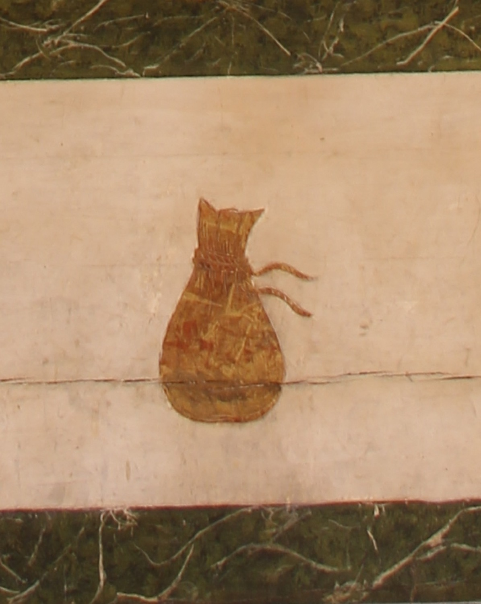

La bossa dels doblers dels captius és un dels símbols de l'Orde de la Santíssima Trinitat i de la Redempció de Captius, també coneguda com l’Orde Trinitària. Un dels objectius d’aquest orde era l'alliberament dels cristians captius a terres musulmanes pagant aquests rescats amb doblers provinents d'almoines i donacions. Aquesta bossa representa aleshores el recurs econòmic necessari per comprar la llibertat dels cristians captius i simbolitza el compromís econòmic i espiritual dels trinitaris amb ells.
L’altar, en el frontal del qual es troba aquest relleu, és obra de Bernadí Mulet (s. XIX).